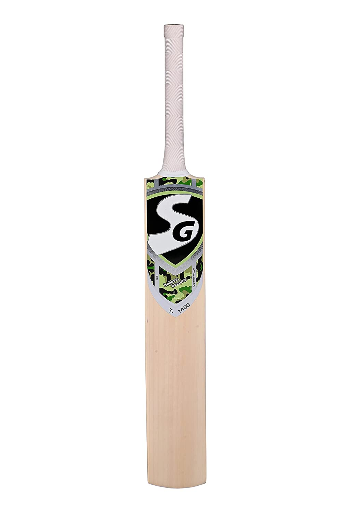

Test images -

Output on Google Lensimage recognized as bat
Confidence - 95%
Result - more reliable
Output on Mobile Netimage recognized as bat
Confidence - 87%
Result - less reliable compared to Google Lens
Test images -
Output on Google Lensimage recognized as basket
Confidence - 85%
Result - less reliable
Output on Mobile Netimage recognized as basket
Confidence - 97%
Result - more reliable compared to Google Lens
Test images -
Output on Google Lensimage recognized as football
Confidence - 98%
Result - more reliable
Output on Mobile Netimage recognized as football
Confidence - 76%
Result - less reliable compared to Google Lens